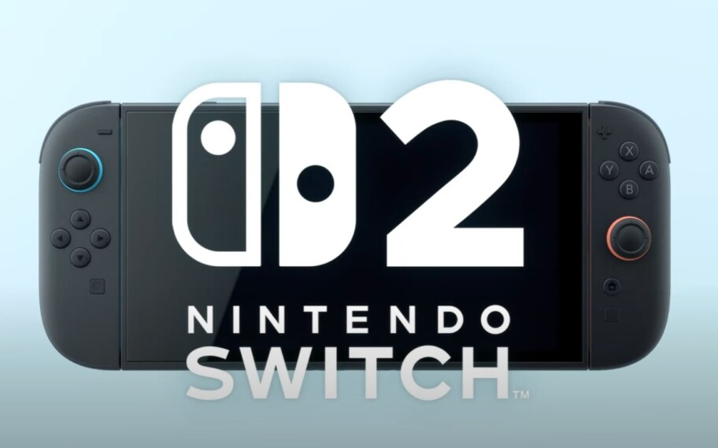
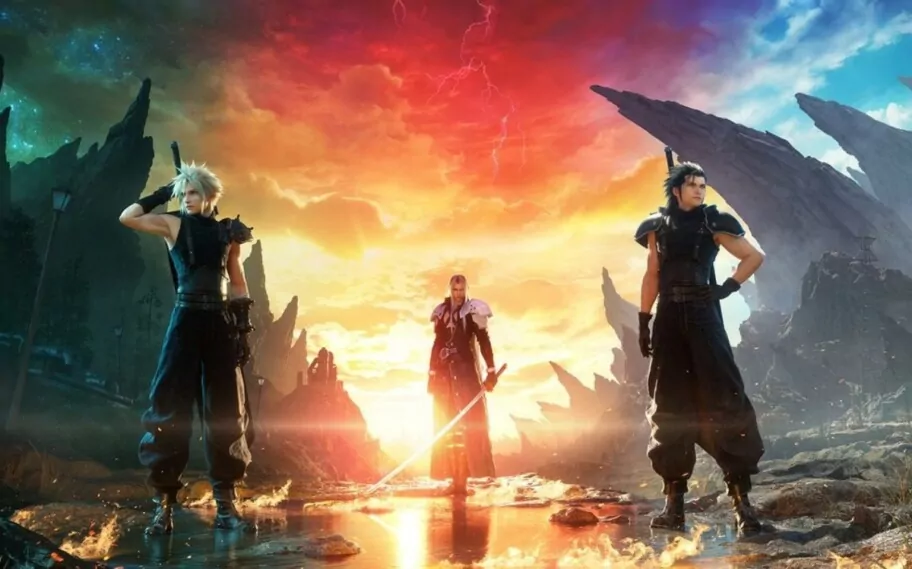

| QUACK | |
|---|---|
Posts da semana

Nintendo switch 2 anunciado!Novo console da nintendo é revelado em trailer

Final Fantasy VII Rebirth é lançado na SteamFizemos um review de como ficou o port para PCs |
|
| Visite o site | |